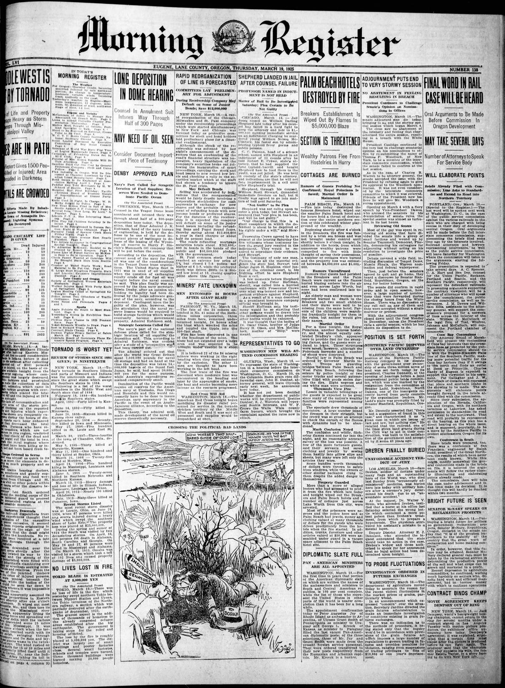
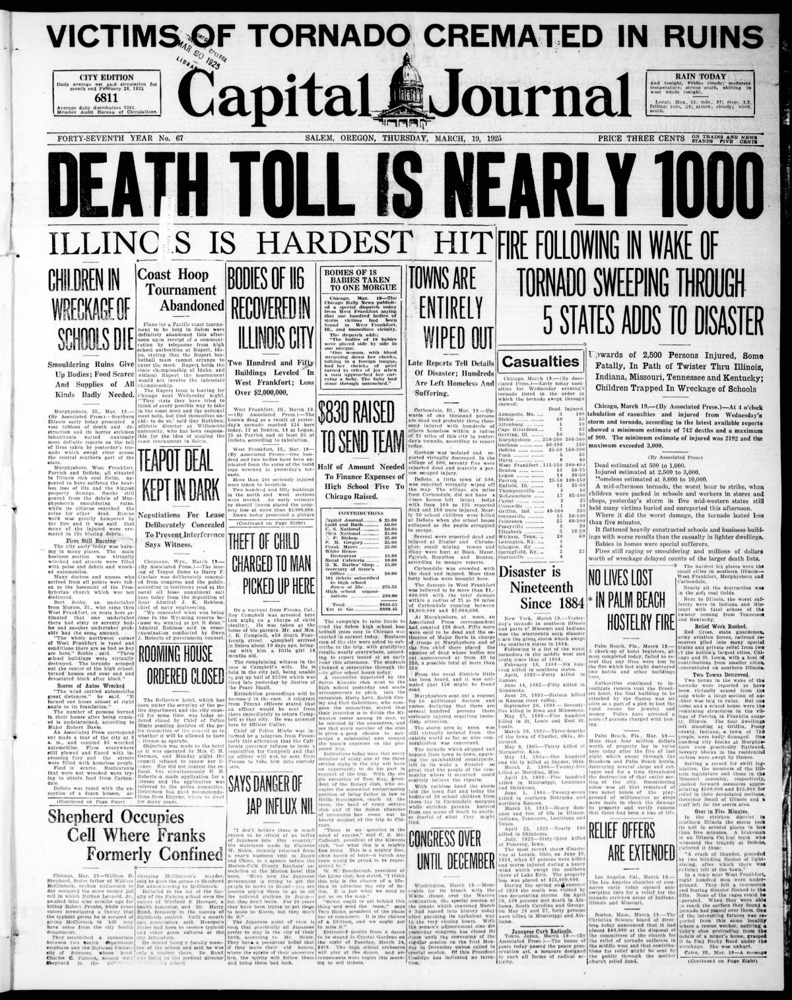

HN HN-441 · March 19, 1925 · Disasters, Accidents & Emergencies > Hurricanes, Tornadoes, Dust & Severe Storms > Tornadoes
Tri-State tornado 1925 seed reported feared over 1,000 casualties; later histories use 695 dead.
Source: Indianapolis Times, p. 1 — original page; Decatur Daily Democrat, p. 1 — second original page; National Weather Service study.
Report: Within a day of the massive storm, one newspaper predicted 1,000 deaths and another claimed more than 1,000 overall with nearly 200 killed in southern Indiana. The dispatches described destroyed schools, homes, towns, and fires among the wreckage.
Assessment: The March 18 Tri-State Tornado, passing through Missouri, Illinois, and Indiana, killed 695 people, of whom 71 died in Indiana, according to the National Weather Service. The contemporaneous projections significantly overstated both totals. The disaster itself and its extraordinary magnitude are firmly documented.
Class: Different measures (F)
Recorded difference/concern: Tri-State tornado 1925 seed reported feared over 1,000 casualties; later histories use 695 dead.
Assessment: Early 'casualties' is not necessarily deaths, and later figure is retrospective.
Source links: https://oregonnews.uoregon.edu/lccn/sn96088115/1925-03-19/ed-1/seq-1/ https://oregonnews.uoregon.edu/lccn/sn90066132/1925-03-19/ed-1/seq-1/ https://genealogytrails.com/ill/white/il_white_tornado.htm
Authentic scans retrieved from Historic Oregon Newspapers (University of Oregon). Article crops are located using the archive's own ALTO OCR word coordinates and rendered at native crop resolution; page scans are 1,200-pixel-wide renditions. No images were generated, mocked, or retouched.


Not yet acquired. Queued for provider-specific acquisition testing (see source-acquisition manifest).
URL (preserved verbatim): https://newspapers.library.in.gov/?a=d&d=IPT19250319.1.1
Saved research report: Historical_Newspaper_Event_Research_428-452_2026-10-23.md
Evidence note: A newspaper report means a historical publication made a claim; it does not establish that claim as fact. Contemporary reporting is separated from later scholarly context and our own assessment.